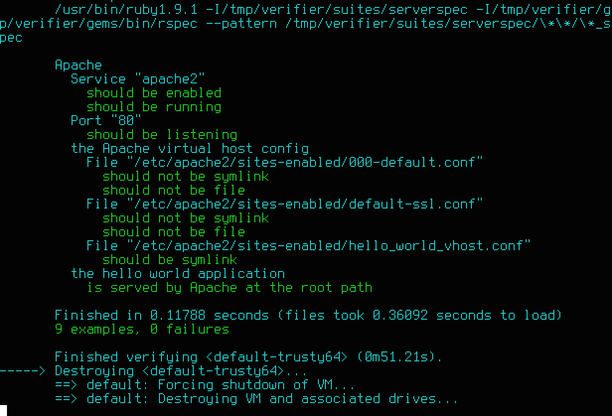

Or at least its infrastructure?
"Your infrastructure deserves tests too."
test-kitchen gemRspec tests for your infrastructure!
describe service('apache2') do
it { should be_enabled }
it { should be_running }
end
describe port(80) do
it { should be_listening }
end├── Gemfile
├── Gemfile.lock
├── README.md
├── ansible
│ ├── playbook.yml
│ ├── requirements.yml
│ └── templates
│ └── hello_world_vhost.conf.j2
├── index.html
├── test
└── integration
└── default
└── serverspec
├── apache_spec.rb
└── spec_helper.rbGems:
bundle installAnsible roles:
ansible-galaxy install --role-file=ansible/requirements.yml --roles-path=ansible/roleswire up test-kitchen
driver:
name: vagrant
provision: true
vm_hostname: apache
provisioner:
name: ansible_playbook
playbook: ansible/playbook.yml
roles_path: ansible/roles
...ansible/playbook.ymlindex.html to the Apache roottest/integration/default/serverspec/*_spec.rbExample:
describe 'the hello world application' do
let(:hello_world) { Net::HTTP.get(URI('http://localhost:80')) }
it 'is served by Apache at the root path' do
expect(hello_world.include? '<h1>Hello World!</h1>').to eq true
end
endbundle exec kitchen test
github.com/mdb/test-kitchen-example